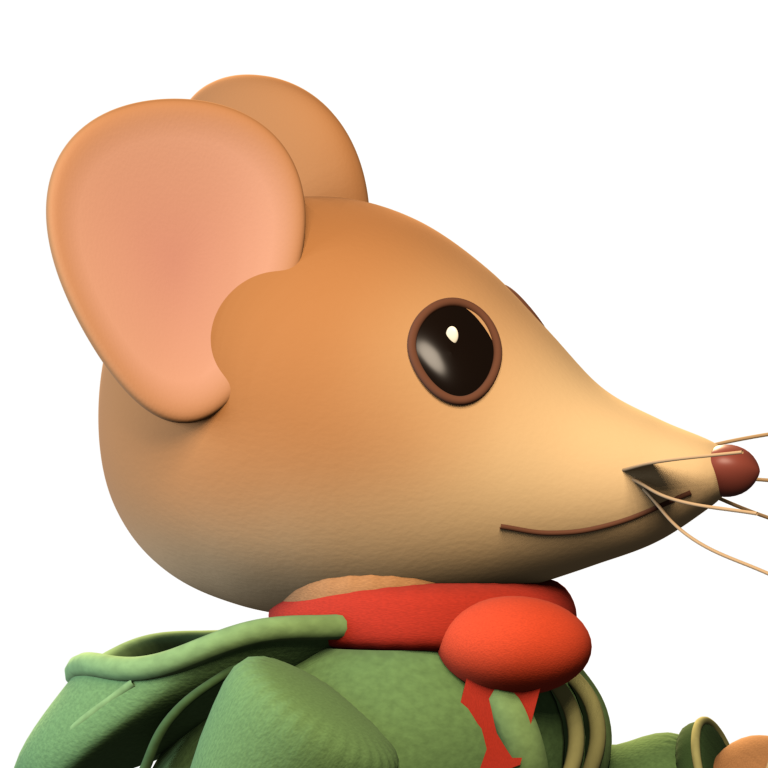
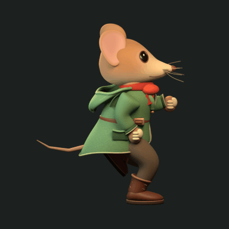
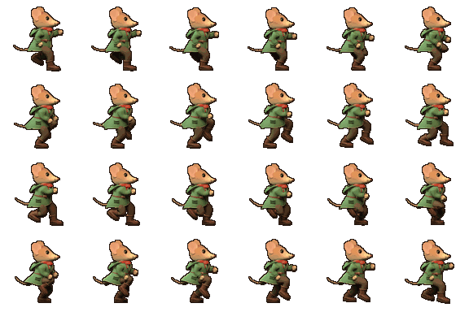

Zebes / Character experiment / 02
Hood down. A fuller mouse.
A broader chest and coat, a hood draped onto the back, and a rebuilt face with one continuous skull-to-muzzle surface. Compare the same animation frame with the previous model, or switch to the original drawing.
Compare with
01 / 24
One armature · Fixed bone lengths · Grounded support soles · Shared 48-color sprite palette
The small sprites are reduced from the same 512 px renders with a fixed palette and a one-pixel outline. The run is newly authored for this 3D rig; it does not claim to reproduce the previous twelve-pose drawing. The turntable below shows actual views of the mesh.
Inspect the rebuilt face

Turntable16 rendered views
All 24 poses96 px frames · 6 columns
The Blender file preserves the materials, separate mesh parts, vertex weights and editable animation. GLB carries the rig and base colors; Blender's procedural cloth detail is not baked into that portable preview.